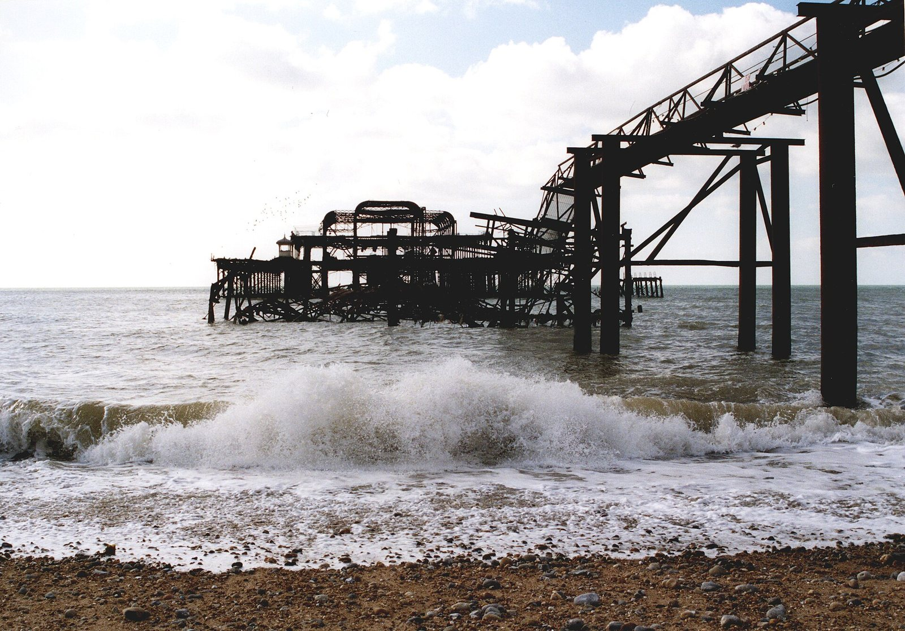
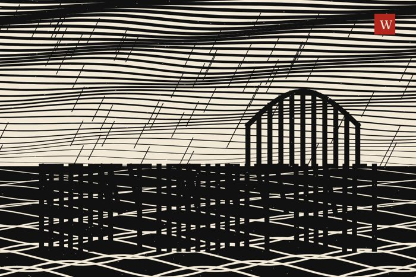

View 67 of 166
The latest damaged view of the pier, No. 67
Originally: Brighton west pier by Kevin Walsh from Oxford, England, 2005-04-11
Condition report (2005): skeleton. Still standing, mostly.
- Made by
- A human
- Artist
- Kevin Walsh from Oxford, England
- Original title
- Brighton west pier
- Source
- Wikimedia Commons
- Licence
- CC BY 2.0

Keys: ← → walk the pier · W wanders · ← previous / next by a person →

In conversation withNo. 186, by the machineWoodcut, black and creamHung opposite, by the curator's dice: a view by the machine.